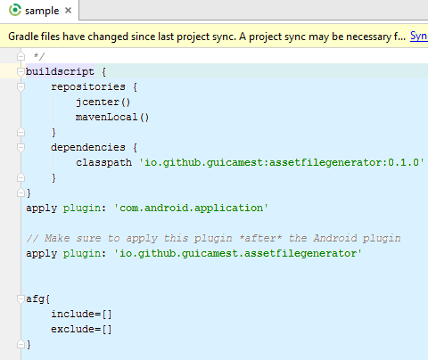
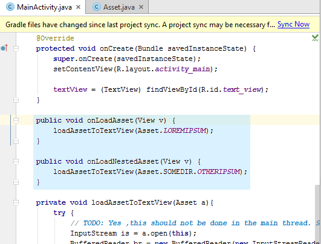

Asset File Generator
Gradle plugin for Android to generate Assets.java based on assets folder
Introduction
Android developers often use assets in their projects. To use them, they sometimes have to use a String specifying the path to it, which can lead to errors and declaration of constants in their code.
That's were Asset File Generator (AFG) comes into play. Just by applying the AFG plugin, R.java 's brother, Asset.java is generated so that developers can refer to their assets through constants.
Using Asset File Generator
We'll demonstrate Asset File Generator using a basic sample. For the complete sample code that you can download, compile and run, see Asset File Generator's sample.
Let's say we have the following project:

We apply assetfilegenerator plugin to the project, declaring it in
build.gradle:

Then, after rebuilding the project, we can refer to our assets using Asset.java:

Quick setup
You will need to apply the Asset File Generator plugin to your project.
If you use Android Studio, you are good to go. Just rebuild your project after adding/removing your assets.
If you use Eclipse ADT, Asset.java will be generated after
gradlew eclipse:eclipseAfter adding/removing your assets, you should regenerate the file repeating the command above or using
gradlew yourproject:generateEclipseAssetsFile
The source code to the Asset File Generator, its samples, and this website is available on GitHub.
buildscript {
repositories {
jcenter()
}
dependencies {
classpath 'io.github.guicamest:assetfilegenerator:(insert latest version)'
}
}
// Make sure to apply this plugin *after* the Android plugin
apply plugin: 'io.github.guicamest.assetfilegenerator'
// Configure as you like
afg{
include=[]
exclude=[]
}
FAQ
AFG needs JDK 1.7+ to generate the classes(it does not mean that your project should be compiled against 1.7). If you happen to get the following message:
* What went wrong: A problem occurred configuring project ':sample'. > Could not generate a proxy class for class io.github.guicamest.assetfilegenerator.GenerateAssetFileTask
it is a sign that you are not using a JDK 1.7+. Verify it checking the JAVA_HOME environment variable.
Contributing
If you would like to contribute code you can do so through GitHub by forking the repository and sending a pull request.
When submitting code, please make every effort to follow existing conventions and style in order to keep the code as readable as possible. Please also make sure your code compiles by running gradle clean build.
License
Copyright 2015 guicamest Licensed under the Apache License, Version 2.0 (the "License"); you may not use this file except in compliance with the License. You may obtain a copy of the License at http://www.apache.org/licenses/LICENSE-2.0 Unless required by applicable law or agreed to in writing, software distributed under the License is distributed on an "AS IS" BASIS, WITHOUT WARRANTIES OR CONDITIONS OF ANY KIND, either express or implied. See the License for the specific language governing permissions and limitations under the License.